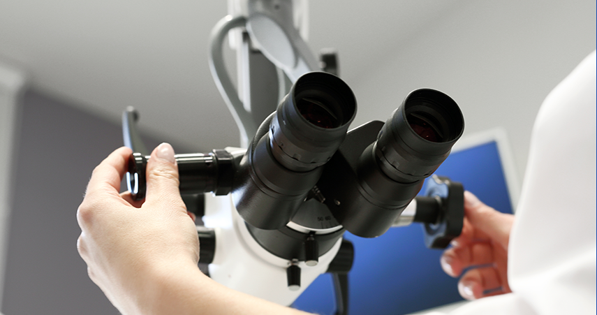
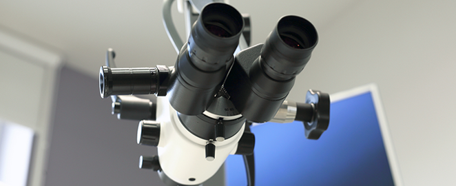

내시경검사
암을 예방할 수 있는 가장 효과적인 방법
정기적인 내시경 검사를 실시하게 되면
암을 일으키는 용종 단계에서 조기 발견하고 제거하여 암을 예방할 수도 있습니다.
암을 일으키는 용종 단계에서 조기 발견하고 제거하여 암을 예방할 수도 있습니다.

내시경검사 소개
우리나라에서 한 해 암으로 사망하는 사람의 수는 8만명으로
이 가운데 위, 대장암 사망자가 50%나 됩니다.내시경 검사는
위암과 대장암을 조기 발견해 완치할 수 있는 가장 간편하고 경제적인
검사법입니다.
성누가병원 내시경 검사
풍부한 경험을 지닌 소화기내과 전문의에 의한 내시경 검사
소화기 내과 전문의가 직접 검사를 진행하고 있으며
소화기 질환에 대한 전문화된 진료 서비스를 제공합니다.
소화기 질환에 대한 전문화된 진료 서비스를 제공합니다.
환자의 증상에 따른 맞춤 검사
환자 개인의 증상에 맞는 개인 맞춤 검사를 실시합니다.

최첨단 고화질 내시경 장비
대학병원 등에서 사용하는 최첨단 내시경 장비를
사용하여 정확한 검사가 가능합니다.
사용하여 정확한 검사가 가능합니다.
완벽하고 철저한 내시경 기구 관리와 멸균 소독
위내시경과 대장내시경 내시경 세척기를 별도로 두어 따로 세척합니다.
대한소화기내시경학회의 내시경기기 세척 및 소독지침을 철저히 준수하여 인체에 무해한 내시경전용 소독제를 사용하여 안전하고 깨끗한 검사를 받을 수 있도록 최선을 다하고 있습니다.
대한소화기내시경학회의 내시경기기 세척 및 소독지침을 철저히 준수하여 인체에 무해한 내시경전용 소독제를 사용하여 안전하고 깨끗한 검사를 받을 수 있도록 최선을 다하고 있습니다.